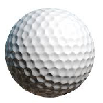
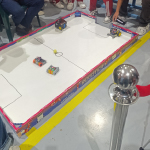

2 Reglamento del campeonato de soccer amateur
2.1 DESCRIPCIÓN GENERAL
En esta categoría, se enfrentan dos equipos en una cancha de fútbol. Cada equipo consta de dos (2) robots que se desplazarán guiados por dos operadores a través de controles de comunicación inalámbrica. El partido de Robot Soccer consta de dos tiempos en los cuales los robots conducirán la pelota para anotar un gol en la cancha del equipo contrario. Una vez culminado el segundo tiempo, el jurado determinará al equipo ganador según el desarrollo de los equipos durante el partido.

2.2 INDICACIONES GENERALES:
En esta categoría se considerará como edad máxima 18 años. La única persona que puede dirigirse al juez será el capitán del equipo. No se podrá utilizar materiales externos que ensucien la pista, ya que en algunos casos favorece a un equipo, pero puede perjudicar a los demás. En caso de empate, se decidirá la victoria por penales. En caso de dos faltas, se otorgará un penal al equipo contrario. La retención voluntaria del balón utilizada para pasar tiempo se considera falta. Si el mecanismo de pateo ocasiona cualquier tipo de daño (revisado por el juez), ese equipo automáticamente perderá el partido. Se considera gol cuando el balón cruza el 100% de la línea de meta (arco); puede ser por arrastre o disparo del mecanismo de pateo.
2.3 DIMENSIONES Y CARACTERÍSTICAS DE LOS ROBOTS
Deberán tener un máximo de 15x15 centímetros (largo y ancho). No hay restricción con respecto a la altura. La masa del robot es de máximo 500 gr. Incluyendo todos sus componentes.
2.4 DISEÑO:
El diseño de cada robot es libre. El tipo de tracción del robot es libre: ruedas, banda tipo oruga, patas articuladas, tipo gusano, etc. El orificio para manejo de pelota debe ser máximo de 3 cm. Se permitirá el uso de un mecanismo de pateo siempre y cuando no supere las medidas máximas en estado activo, y no ocasione retención del balón.
2.5 MATERIALES:
El empleo de materiales en la estructura del robot y el número de motores es libre. El robot debe construirse con motores con caja de reducción amarilla o azul, sin modificaciones internas o externas. La alimentación eléctrica del robot será con pilas o baterías; está prohibido el uso de combustibles (motores de combustión) o cualquier material inflamable. Ningún robot deberá alimentarse en forma externa a través de cables.
| Motor Amarillo | Motor Azul |
|---|---|
 |
 |
2.6 CONTROL:
Se utilizará cualquier tipo de comunicación inalámbrica.
2.7 BALÓN
Deberá ser una pelota de golf estándar: 46 g de peso aproximadamente. 43 mm de diámetro aproximadamente. Si el balón se vuelve defectuoso durante el encuentro, se procederá a detener el encuentro para reemplazar el balón y se continuará en la misma posición en la que se detuvo el encuentro. El balón se reemplazará únicamente con la autorización del árbitro.

2.8 CANCHA
Las dimensiones de la cancha se publicarán en la página oficial del evento.

2.9 LA COMPETENCIA. ROL DE ENCUENTROS
Se determinarán los turnos del partido por medio de un sorteo, el mismo que se realizará en presencia de los jueces del evento y deberá ser acatado a cabalidad. Los equipos se enfrentarán en un partido de dos (2) tiempos de dos (2) minutos cada uno, con un tiempo intermedio de un (1) minuto.
2.10 RUTINA DE CADA PARTIDO
Se designará al equipo que empieza el juego por medio de un sorteo realizado por el juez previo al encuentro. Los operadores de los robots participantes entrarán a la zona de juego y ubicarán a sus respectivos robots en la posición de inicio según corresponda. Los operadores del robot se situarán detrás del arco correspondiente a su equipo.
2.11 INTERRUPCIÓN Y REANUDACIÓN DEL PARTIDO
El partido se interrumpirá a petición de los jueces cuando: Si uno o ambos robots presentan defectos, el operador podrá solicitar tiempo (1 minuto y solo 1 vez por cada tiempo) para repararlo. Se podrá realizar cambios de batería al finalizar cada encuentro, considerando que no afecte dimensiones ni peso. Cuando el partido haya sido interrumpido, se volverá a empezar desde la posición inicial. Los jueces podrán detener el partido siempre que lo consideren necesario para deliberar o permitir la entrada de los operadores a la zona del partido. La última decisión siempre la tendrán los jueces y será inapelable. Cuando alguno de los robots haya sufrido algún daño provocado por el equipo contrario o por otras causas, que le impida continuar participando.
2.12 FALTAS
Se consideran faltas las siguientes acciones, que serán sancionadas por los jueces: Tardar más de 1 minuto en reanudar el partido después de haber solicitado tiempo. Acelerar o mover el robot antes de que el árbitro lo indique. Empujar al robot del equipo contrario cuando el balón esté a una distancia mayor a 10 cm del afectado.
2.13 DESCALIFICACIÓN DEL ENCUENTRO
Se considerarán como descalificación (perdiendo automáticamente el partido) las siguientes acciones: Causar desperfectos de forma deliberada al oponente. Agredir verbalmente al juez o a los miembros del equipo oponente. El uso de dispositivos inflamables.
2.14 EL INCUMPLIMIENTO DE CUALQUIERA DE LAS DISPOSICIONES DEL REGLAMENTO.
DESCALIFICACIÓN DE LA COMPETENCIA En casos extremos, los jueces se reservan el derecho a expulsar de la competición a quienes se crean merecedores de dicha sanción.
2.15 JUECES
La figura del juez o los jueces es importante en la competencia; él será el encargado de que las reglas y normas establecidas sean cumplidas. Los jueces para esta competencia serán designados por el comité organizador. Los participantes pueden presentar sus objeciones al juez encargado de la categoría antes de que acabe la competencia. En caso de duda en la aplicación de las normas, el juez se regirá por el reglamento establecido haciéndolo cumplir.
2.16 TRANSITORIOS:
De no contar con un mínimo de 4 robots o equipos participantes, la categoría será considerada únicamente como exhibición. Todos aquellos sucesos que no se contemplen dentro del presente reglamento, durante la competencia, serán resueltos por el Comité Organizador en conjunto con los jueces, sin derecho de apelación. Una vez realizada la inscripción del robot, no se realizarán devoluciones de dinero. Los distintivos de cada participante serán entregados durante el desarrollo del evento. El cronograma oficial se dará a conocer unos días antes de la competencia, el cual podrá variar en base a los imprevistos.